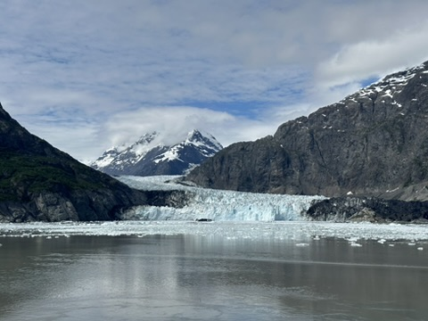

We stood by the water and watched the glacier meet the mountains. The scale is hard to take in at first: dark rock, pale ice, and a lake that seems to hold the whole landscape still.

It was cold, quiet and unexpectedly peaceful. I keep coming back to this photograph because it brings back that feeling of having nowhere else to be.